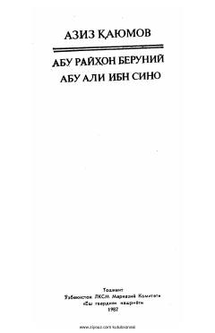

ARBuyuk allomalar Abu Rayhon Beruniy va Abu Ali ibn Sinoning hayoti va ilmiy merosiga bag'ishlangan.
Ushbu kitob buyuk mutafakkirlar Abu Rayhon Beruniy va Abu Ali ibn Sinoning hayoti, ilmiy merosi va jahon faniga qo'shgan ulkan hissasi haqida hikoya qiladi. Aziz Qayumov qalamiga mansub mazkur asar allomalarning ilmiy izlanishlari va boy ma'naviy dunyosini ochib beradi. Kitob 1987-yilda Toshkent shahrida "Yosh gvardiya" nashriyotida chop etilgan.